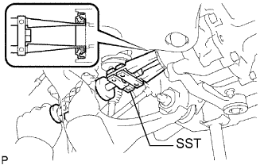

САЛЬНИК ВАЛА ПОЛУОСЕВОЙ ШЕСТЕРНИ ПЕРЕДНЕГО ДИФФЕРЕНЦИАЛА > ЗАМЕНА |
| 1. СНИМИТЕ ЛЕВЫЙ ПЕРЕДНИЙ ПРИВОДНОЙ ВАЛ В СБОРЕ |
Снимите левый передний приводной вал в сборе (Нажмите здесь).
| 2. СНИМИТЕ ПРАВЫЙ ПЕРЕДНИЙ ПРИВОДНОЙ ВАЛ В СБОРЕ |
| 3. СНИМИТЕ САЛЬНИК ВАЛА ПОЛУОСЕВОЙ ШЕСТЕРНИ ДИФФЕРЕНЦИАЛА |
|  |
С помощью SST снимите 2 сальника.
| 4. УСТАНОВИТЕ САЛЬНИК ВАЛА ПОЛУОСЕВОЙ ШЕСТЕРНИ ДИФФЕРЕНЦИАЛА |
Нанесите универсальную консистентную смазку на 2 новых сальника.
С помощью SST и молотка запрессуйте 2 сальника.
| Параметр / Устройство | Заданные условия |
| Левая сторона | -0,45 - 0,45 мм (-0,018 - 0,018 дюйма) |
| Правая сторона | 4,8 - 5,8 мм (0,189 - 0,229 дюйма) |
| *1 | Дифференциал |
| *2 | Уплотнение |
| *a | Левая сторона |
| *b | Правая сторона |
| 5. УСТАНОВИТЕ ЛЕВЫЙ ПЕРЕДНИЙ ПРИВОДНОЙ ВАЛ В СБОРЕ |
Установите левый передний приводной вал в сборе (Нажмите здесь).
| 6. УСТАНОВИТЕ ПРАВЫЙ ПЕРЕДНИЙ ПРИВОДНОЙ ВАЛ В СБОРЕ |